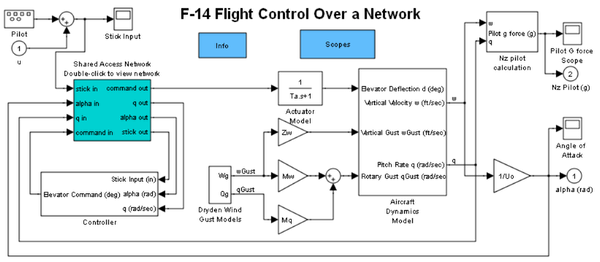
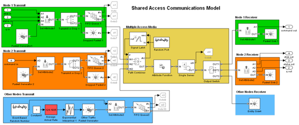

F-14 Flight Control Over a Network
Contents
Overview
This model modifies the time-based F-14 flight control demo by adding a network between the controller and the plant that models the aircraft dynamics.
 Structure
The network model is similar to the one in the Shared Access Communications Media demonstration.
In the subsystem (Shared Access Network Double-click to view network), double-click the Average Arrival Rate block (red) and use the slider to change the background traffic level. You can examine the impact of background traffic on the accuracy of the flight control loop. At low traffic volume, the delays have little effect. However, at moderate volume, the increased delay causes the control loop to oscillate when the control stick is moved quickly. At higher volume, the delays are sufficient to render the control loop ineffective.